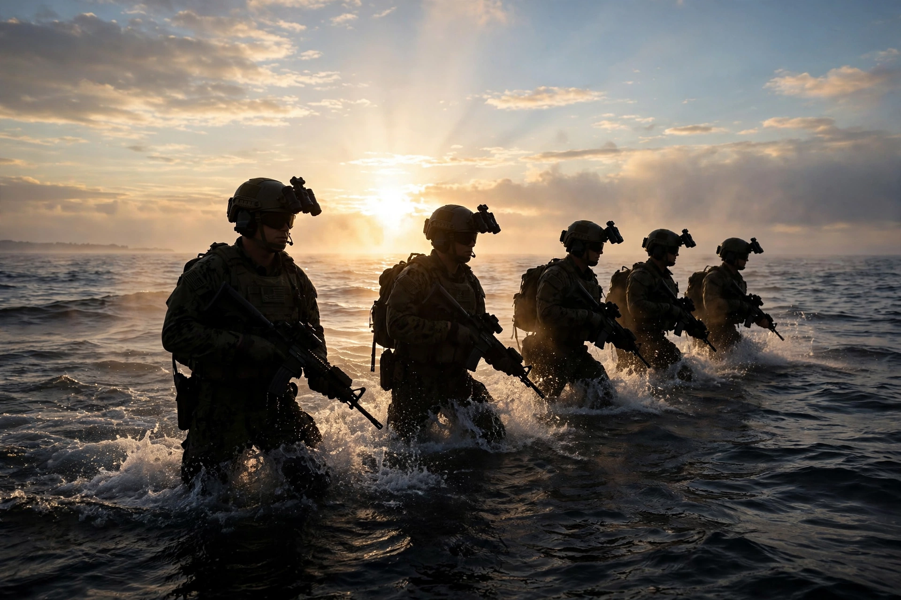

Founded: 1 January 1962
Branch: United States Navy
Type: Special operations force
Name origin: Sea, Air, and Land Teams
Motto: "The only easy day was yesterday"
The United States Navy Sea, Air, and Land (SEAL) Teams, commonly known as Navy SEALs, are the U.S. Navy's primary special operations force and a component of Naval Special Warfare Command. Established by President John F. Kennedy in 1962, they conduct unconventional warfare, direct action, special reconnaissance, counterterrorism, and hostage rescue.
SEALs trace their lineage to World War II Naval Combat Demolition Units and Underwater Demolition Teams. They served extensively in Vietnam, Grenada, Panama, the Gulf War, Iraq, and Afghanistan. In May 2011, SEAL Team Six (DEVGRU) killed Osama bin Laden in Operation Neptune Spear in Abbottabad, Pakistan.
Candidates undergo Basic Underwater Demolition/SEAL (BUD/S) training in Coronado, California — about six months including the notorious "Hell Week" — followed by parachute training and SEAL Qualification Training, with high attrition throughout.